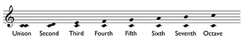
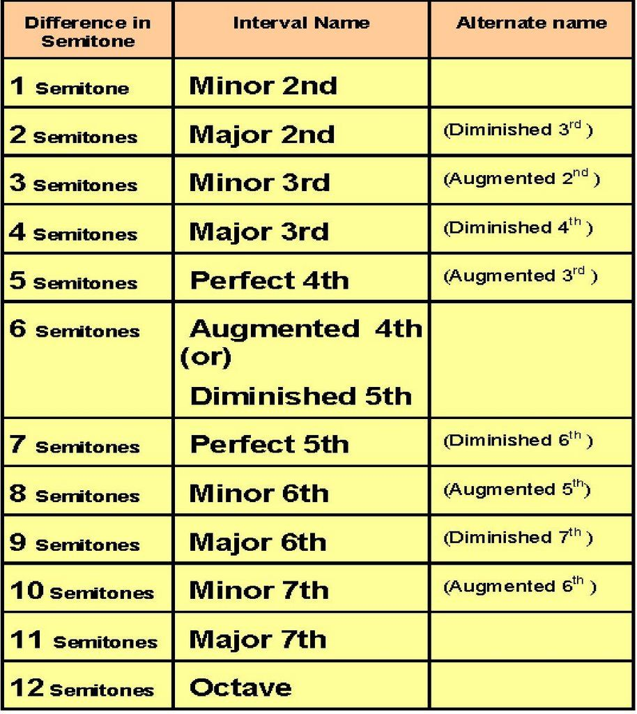

Intervals are identified by labels that consist of two determinants, quality and number. You can calculate the number of an interval by regarding the lower note as the tonic and then counting up the degrees of the scale. Note that the two notes in the interval can be sounded together as a harmonic interval, or in succession as a melodic interval.
Qualities that go with the number include: Perfect, Major, Minor, Augmented, and Diminished. Perfect intervals are the unisons, fourths, fifths, and octaves, known for stability. Major and minor intervals apply to seconds, thirds, sixths, and sevenths, with major being wider and minor being narrower by a half step. Augmented intervals are a half step larger than their perfect or major counterparts, while Diminished intervals are a half step smaller than their perfect or minor counterparts. From a semitone perspective:
